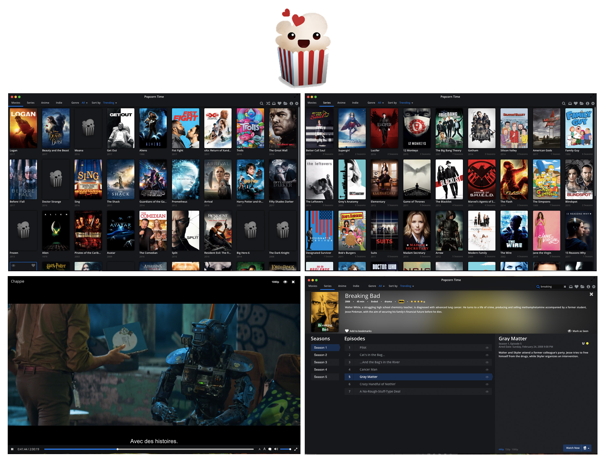

Il vous faut :
☞ Un ordinateur (Windows, Linux, Macintosh) ou un téléphone portable Android.
☞ Mozilla Firefox ou un autre navigateur open source pour pouvoir télécharger le logiciel Open Source Popcorn Time.
☞ Des choses importantes a faire, mais que vous ferez plus tard.
☞ Dans la barre de recherche de votre navigateur open source, tapez le nom du logiciel "Popcorn Time"
☞ Allez sur le site officiel du logiciel. Il s'agit de https://popcorntime.sh/fr . C'est le seul qui vous garantie la vraie version du logiciel, et qui ne vous donnera pas de virus.
Une fois téléchargé, installez le logiciel sur votre appareil.
☞ Ouvrez le logiciel. Vous tombez directement sur une selection de films et pas besoin d'un compte pour tout regarder !
☞ Pour plus de confort lors de l'utilisation, cliquez sur le petit engrenage en haut a droite pour ouvrir les paramètres.
☞ Vous pouvez regler la langue par defaut du logiciel sur français. Il s'agit de la toute premiere option proposée.
☞ Allez ensuite dans la rubrique des sous titre et mettez les sous titres par défaut sur français. Les films et séries présents dans le logiciel sont tous en anglais mais ont presque tous des sous titres français. Ils peuvent s'activer manuellement lorsque le film est lancé, mais il est plus facile de les programmer pour qu'ils s'affichent automatiquement lors d'un visionnage. Vous pourrez bien sur les enlever ou changer la langue directement pendant votre visionnage.
☞ Vous pouvez également changer la taille des sous titres si vous le souhaitez. D'autre paramètre comme la police ou la couleur sont disponible en cliquant sur "parametres avancés"
☞ Une fois fini, vous pouvez quitter les paramètres et commencer votre visionnage ! En cas d'erreur, vous pourrez remettre les paramètres a zéro.
☞ Beaucoup de travail a faire, et peu de motivation ? Mais comment resister a cet immense catalogue de films et de série ?
☞ Calez vous dans un fauteil et perdez votre temps devant Popcorn Time !
